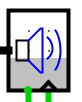

| Library: | Audio |
| Introduced: | 5.0.3-HC |
| Appearance: |  |
PCM Sink converts digital PCM data provided by a circuit, in real-time, into an analog audio signal for playback using the native audio system. It includes an internal data buffer to account for slight variations in Logisim's simulation speed or slight mismatches between the simulation tick rate and the intended audio playback rate. The PCM Sink component has a data input on the west edge, a write-enable input on the south edge, and a clock input on the south edge. When the write-enable input is 1 and the clock is triggered, one new data value is captured at the data input and added to the playback buffer. At all times, whenever the playback buffer is not empty, the audio data in the buffer is removed from the buffer at a steady rate, converted to analog audio, and played through the speakers or other system audio output. If the playback buffer is full, new data is ignored.
The amount of data in the playback buffer, as a fraction of the buffer's total capacity, is shown as an overlay on the PCM Sink component, with the gray bar indicating pending data to be played and the white color indicating empty space in the buffer for more data. A blue speaker icon indicates that data is being converted and played as audio. When the buffer is empty or overflows, when the clock is stopped, or if there are any errors in playback, the speaker icon will show as red.
Simulation Tick Rate: Because audio data must be feed to the the sound system at a fixed rate, you must set Logisim's simulation clock tick rate and the PCM Sink's Sample Rate attribute to match. If the simulation tick rate runs faster than the PCM audio Sample Rate, the playback buffer will overflow and audible glitches will be heard. If the simulation runs slower than the PCM audio Sample Rate, the playback buffer will nearly always be empty, resulting in little or no audio produced.
When the component is selected or being added,
Alt-0 through Alt-9 alter its Data Bits
attribute.
rising edgeindicates that the register should update its value at the instant when the clock rises from 0 to 1. The
falling edgevalue indicates that it should update at the instant the clock falls from 1 to 0.
None.
Not yet supported.